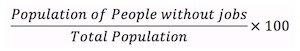
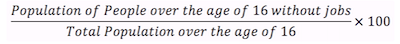

Get in touch!


The unemployment rate: in western countries this tends to be one of the most discussed and politicized of the official statistics produced by Governments. In the US, the unemployment rate has been under a higher than usual level of scrutiny since the 2008 financial meltdown led to historically high levels of unemployment.
However, as of February 2015 the unemployment rate has fallen to 5.5%, meaning it is back within the normal historical range and is expected to keep falling. So everything is all good right? Maybe.
Before we get into that, first a bit more detail on how the unemployment rate is calculated. For such a well-known statistic, it appears to be relatively poorly understood outside of the world of policy wonks. Ask the average person to guess how the unemployment rate is calculated and they are likely to guess something along the lines of the following:
Someone with a bit more time to think on it may consider the fact that not all of the population are of a working age and factor that into their guess:
But even this more refined calculation would result in an unemployment rate well into the 30%-40% range. The reason for that is, as the Bureau of Labor Statistics (BLS) outlines, to qualify as unemployed, a person has to be part of the Civilian non-institutional population [1] and meet one of the following two criteria (emphasis mine):
As I am sure you can imagine, this definition leaves a lot of people that many would consider "unemployed" in some third pool, neither employed nor unemployed as the BLS defines it. These people are actually in a pool labeled "not in the labor force".
From Bureau of Labor Statistics data, in 2014, people in the labor force made up 62.9% of the Civilian non-institutional population, leaving just over 92 million people outside the labor force. But this percentage of people in the labor force (also called the "Participation Rate") has changed significantly over time. Chart 2 shows the Participation Rate since 1947:
There are several interesting things to notice here.
Firstly, from the early 60s until the late 90's, the percentage of people considered in the labor force surged - from 58.7% in 1963 to 67.1% in the year 2000. To give you an idea of how that translates into numbers of people, that increase meant there were an additional 17.8 million people in the labor force in the year 2000 than there would have been if the participation rate from 1963 had remained unchanged.
Who were all these extra people? Most of this increase represents the movement of women into the labor force over time and the rise of the two income household, both of which can be seen in the increasing participation rate for woman (see Chart 3). Although this indirectly led to a lower participation rate for men, the overall result was an increase in the participation rate in general.
The other major trend we can see in the Participation Rate over time is the downwards trend since 2000. By the end of 2014 the US had returned to a Participation Rate not seen since 1977. The result is that even though the headline unemployment rate has dropped back down to 5.5% as of February 2015, once the lower participation rate is factored, the picture isn't nearly as rosy, as shown in Chart 4:
This has not gone unnoticed (see Forbes, CNN and Bloomberg for example), but what is the cause and what impact does this have for public policy going forward? This will be something we will explore over the next few weeks in a series of articles - watch this space.
In the meantime, keep an eye on the Datasets section of this website for downloads of the various datasets being used in these articles.
[1] Persons 16 years of age and older residing in the 50 states and the District of Columbia, who are not inmates of institutions (e.g., penal and mental facilities, homes for the aged), and who are not on active duty in the Armed Forces.